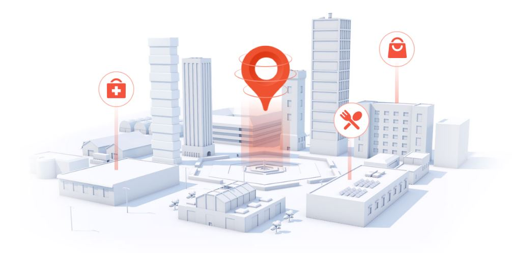
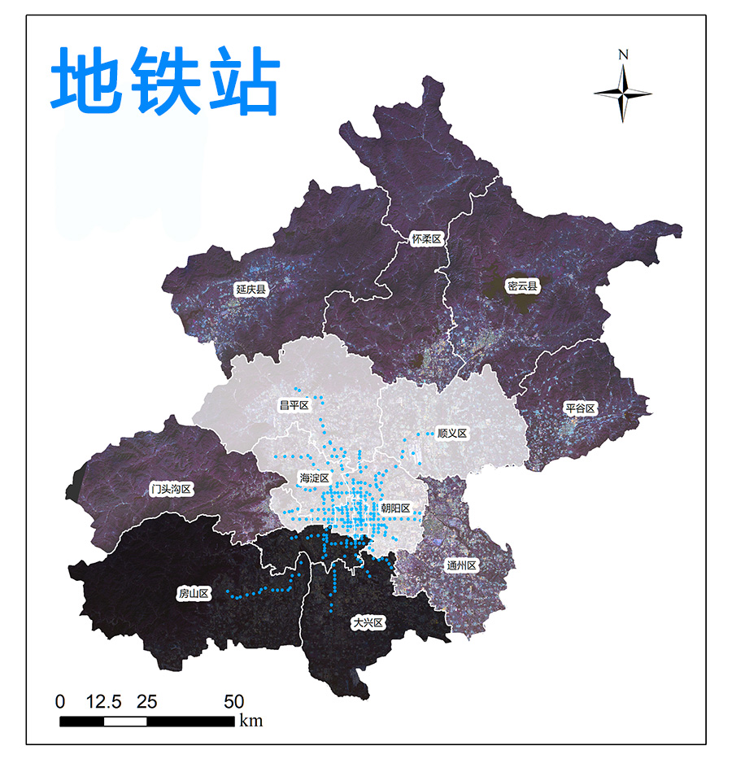
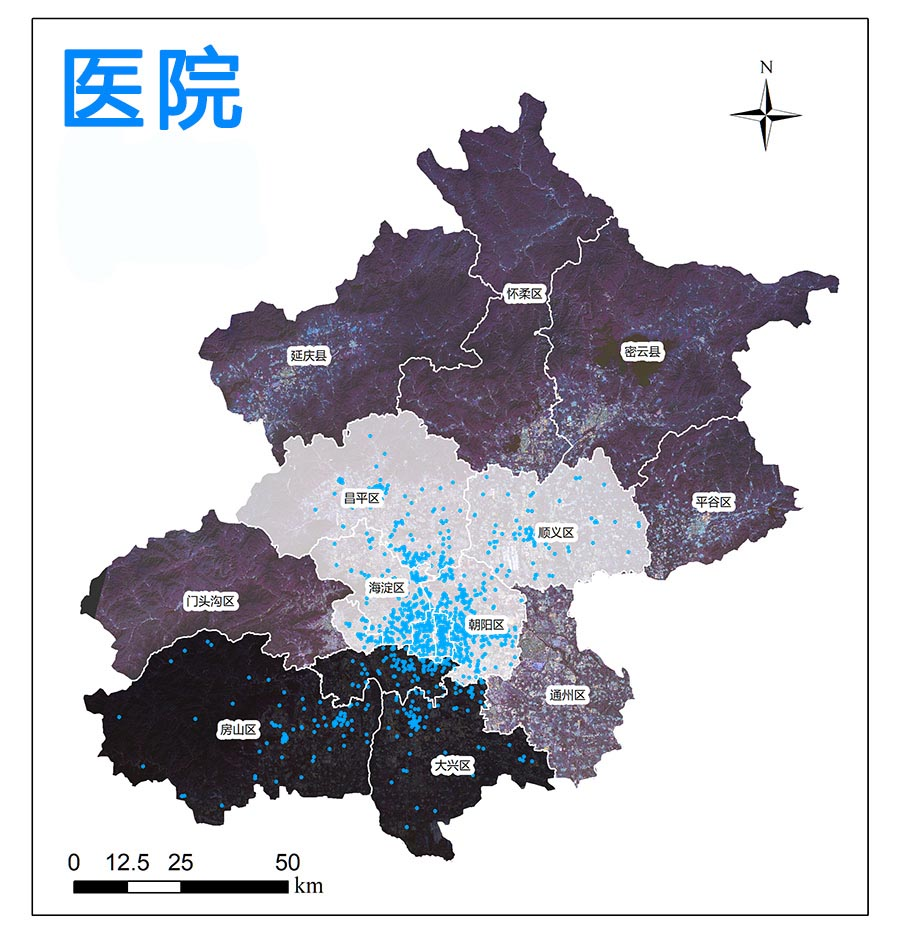
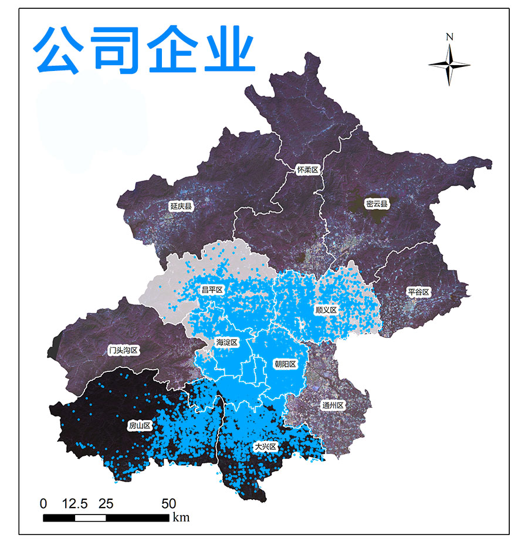

全国城市兴趣点（POI）数据（更新至2022年）
City POI Data of China
POI简介
POI兴趣点（Point Of Interest）是地理信息系统范畴中的一个概念，指可以抽象为点的地理对象，尤其是一些与人们生活密切相关的地理实体，如学校、银行、餐馆、加油站、医院、超市、公交站等。兴趣点的主要用途是对事物或事件的地址进行描述，能在很大程度上增强对事物或事件位置的描述能力和查询能力。
POI通常包含地理对象的名称，位置，类别等信息，随着大数据时代的来临，POI兴趣点被广泛应用于各行各业，包括科研、教育、交通、能源、互联网、旅游、城市、经济、公共应急管理、园区管理、房产、通讯、土建、规划及其相关行业等等。
POI的采集是一个非常耗时费力的工作，因此，POI的数量在一定程度代表着其本身的价值。

POI数据
本站提供的POI数据源自百度Web服务API，如果有一定编程基础，可以尝试自己编程抓取，网络上有很多使用地图API抓取数据的博客或教程，本文就不再多做介绍。
POI数据简单介绍：
空间范围：全国（各市）
数据类型：矢量 | ESRI Shapefile Point； 文本 | csv
数据字段：名称、经纬度、地址、电话、类别等
POI类型：详见附表（POI分类）
投影坐标：WGS 1984
生产时间：2020|2021|2022
POI数据示例
POI数据内容（随机选取一级行业分类数据，用于展示，仅作示例）
下载查看示例数据：北京-写字楼-2021（点击下载）
POI数据示例：北京市部分区域和部分类型POI数据



POI分类详情：
POI分类（第二版）
| 编号 | 一级行业类别 | 二级行业类别 |
|---|---|---|
| 1 | 美食 | 中餐厅、外国餐厅、小吃快餐店、蛋糕甜品店、咖啡厅、茶座、酒吧 |
| 2 | 酒店 | 星级酒店、快捷酒店、公寓式酒店、民宿 |
| 3 | 购物 | 购物中心、百货商场、超市、便利店、家居建材、家电数码、商铺、集市 |
| 4 | 生活服务 | 通讯营业厅、邮局、物流公司、售票处、洗衣店、图文快印店、照相馆、房产中介机构、公用事业、维修点、家政服务、殡葬服务、彩票销售点、宠物服务、报刊亭、公共厕所、步骑行专用道驿站 |
| 5 | 丽人 | 美容、美发、美甲、美体 |
| 6 | 旅游景点 | 公园、动物园、植物园、游乐园、博物馆、水族馆、海滨浴场、文物古迹、教堂、风景区、寺庙 |
| 7 | 休闲娱乐 | 度假村、农家院、电影院、KTV、剧院、歌舞厅、网吧、游戏场所、洗浴按摩、休闲广场 |
| 8 | 运动健身 | 体育场馆、极限运动场所、健身中心 |
| 9 | 教育培训 | 高等院校、中学、小学、幼儿园、成人教育、亲子教育、特殊教育学校、留学中介机构、科研机构、培训机构、图书馆、科技馆 |
| 10 | 文化传媒 | 新闻出版、广播电视、艺术团体、美术馆、展览馆、文化宫 |
| 11 | 医疗 | 综合医院、专科医院、诊所、药店、体检机构、疗养院、急救中心、疾控中心、医疗器械、医疗保健 |
| 12 | 汽车服务 | 汽车销售、汽车维修、汽车美容、汽车配件、汽车租赁、汽车检测场 |
| 13 | 交通设施 | 飞机场、火车站、地铁站、地铁线路、长途汽车站、公交车站、公交线路、港口、停车场、加油加气站、服务区、收费站、桥、充电站、路侧停车位、普通停车位、接送点 |
| 14 | 金融 | 银行、ATM、信用社、投资理财、典当行 |
| 15 | 房地产 | 写字楼、住宅区、宿舍、内部楼栋 |
| 16 | 公司企业 | 公司、园区、农林园艺、厂矿 |
| 17 | 政府机构 | 中央机构、各级政府、行政单位、公检法机构、涉外机构、党派团体、福利机构、政治教育机构 |
| 18 | 出入口 | 高速公路出口、高速公路入口、机场出口、机场入口、车站出口、车站入口、门、自行车高速出口、自行车高速入口 |
| 19 | 自然地物 | 岛屿、山峰、水系 |
| 20 | 门址 | 门址点 |
补充说明：一级行业类别的POI数据中包含二级分类属性，也可以单独获取二级行业类别的POI数据
数据下载
目前提供各级地区的POI数据咨询和下载，可进行地市级、省级或全国范围，以及各级行业类别的POI数据定制。下载查看示例数据：北京-写字楼-2021（点击下载）
该数据为“非共享”数据，不提供直接数据下载链接，如果有需要可以先联系邮箱 gispie@163.com（或QQ 2783343898、新浪微博私信@斩之浪），获取下载口令~
获取流程参考本站数据共享说明
该数据已上架淘宝店铺：蹉跎的点线面
使用说明（此处仅提供地市级范围的POI数据下载）
确定想要下载数据的地区所在的省份
点击左侧地图上的省份，该省份对应的市级地区将在右侧框中显示
在相应位置填写共享口令，点击“下载”获取数据
如果遇到任何数据问题，如坐标不匹配、文件损坏等，请在下方评论区留言，我将及时答疑或更新，十分感谢您的支持~
建议使用Google浏览器，IE内核浏览器可能不正常显示下载按钮等！
Fighting, GISer!
最新博文